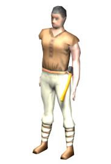

Choisissez votre avatar

Un bon compromis
L'avenir de l'homme, qu'ils disaient
Ne vous ruinera pas en nourriture
Vous ruinera en nourriture, mais est rose
Bonne attaque, dialogue limité
Bonne résistance, peu de points de mouvements